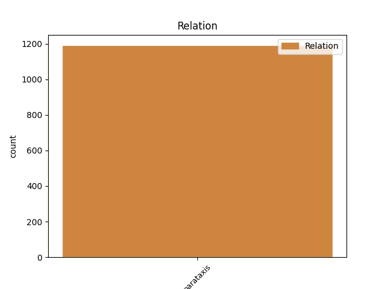
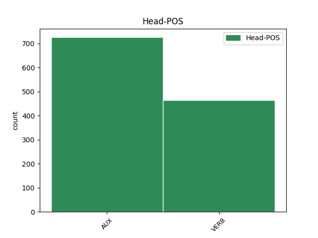

Distribution of features within this leaf



Agreement Rules sorted by frequency.
- When the dependent token is the parataxis(parataxis) of the head token,
1 Men _ _ _ _ 0 _ _ _
2 me _ _ _ _ 0 _ _ _
3 har ha AUX _ Mood=Ind|Tense=Pres|VerbForm=Fin 0 _ _ _
4 aldri _ _ _ _ 0 _ _ _
5 hatt _ _ _ _ 0 _ _ _
6 livstrugande _ _ _ _ 0 _ _ _
7 skadar _ _ _ _ 0 _ _ _
8 eller _ _ _ _ 0 _ _ _
9 hatt _ _ _ _ 0 _ _ _
10 store _ _ _ _ 0 _ _ _
11 leiteaksjonar _ _ _ _ 0 _ _ _
12 i _ _ _ _ 0 _ _ _
13 påskene _ _ _ _ 0 _ _ _
14 , _ _ _ _ 0 _ _ _
15 fortel fortelje VERB _ Mood=Ind|Tense=Pres|VerbForm=Fin 3 parataxis _ _
16 Frantzen _ _ _ _ 0 _ _ _
17 . _ _ _ _ 0 _ _ _
Disagree Examples:
1 For _ _ _ _ 0 _ _ _
2 problemet _ _ _ _ 0 _ _ _
3 i _ _ _ _ 0 _ _ _
4 Kolossæ _ _ _ _ 0 _ _ _
5 hadde ha VERB _ Mood=Ind|Tense=Past|VerbForm=Fin 0 _ _ _
6 å _ _ _ _ 0 _ _ _
7 gjere _ _ _ _ 0 _ _ _
8 med _ _ _ _ 0 _ _ _
9 framande _ _ _ _ 0 _ _ _
10 religiøse _ _ _ _ 0 _ _ _
11 impulsar _ _ _ _ 0 _ _ _
12 , _ _ _ _ 0 _ _ _
13 kan kunne AUX _ Mood=Ind|Tense=Pres|VerbForm=Fin 5 parataxis _ _
14 ein _ _ _ _ 0 _ _ _
15 seie _ _ _ _ 0 _ _ _
16 . _ _ _ _ 0 _ _ _
1 For _ _ _ _ 0 _ _ _
2 studerer _ _ _ _ 0 _ _ _
3 ein _ _ _ _ 0 _ _ _
4 Paulus _ _ _ _ 0 _ _ _
5 nøye _ _ _ _ 0 _ _ _
6 , _ _ _ _ 0 _ _ _
7 i _ _ _ _ 0 _ _ _
8 hans _ _ _ _ 0 _ _ _
9 apologetiske _ _ _ _ 0 _ _ _
10 og _ _ _ _ 0 _ _ _
11 kontekstuelle _ _ _ _ 0 _ _ _
12 forkynning _ _ _ _ 0 _ _ _
13 , _ _ _ _ 0 _ _ _
14 så _ _ _ _ 0 _ _ _
15 kan kunne AUX _ Mood=Ind|Tense=Pres|VerbForm=Fin 0 _ _ _
16 han _ _ _ _ 0 _ _ _
17 altså _ _ _ _ 0 _ _ _
18 vurdere _ _ _ _ 0 _ _ _
19 heidenske _ _ _ _ 0 _ _ _
20 ting _ _ _ _ 0 _ _ _
21 positivt _ _ _ _ 0 _ _ _
22 , _ _ _ _ 0 _ _ _
23 medan _ _ _ _ 0 _ _ _
24 andre _ _ _ _ 0 _ _ _
25 ting _ _ _ _ 0 _ _ _
26 kan _ _ _ _ 0 _ _ _
27 han _ _ _ _ 0 _ _ _
28 gå _ _ _ _ 0 _ _ _
29 sterkt _ _ _ _ 0 _ _ _
30 imot _ _ _ _ 0 _ _ _
31 ( _ _ _ _ 0 _ _ _
32 " _ _ _ _ 0 _ _ _
33 han _ _ _ _ 0 _ _ _
34 vart verte AUX _ Mood=Ind|Tense=Past|VerbForm=Fin 15 parataxis _ _
35 oppaust _ _ _ _ 0 _ _ _
36 i _ _ _ _ 0 _ _ _
37 hugen _ _ _ _ 0 _ _ _
38 då _ _ _ _ 0 _ _ _
39 han _ _ _ _ 0 _ _ _
40 såg _ _ _ _ 0 _ _ _
41 dei _ _ _ _ 0 _ _ _
42 mange _ _ _ _ 0 _ _ _
43 avgudsbileta _ _ _ _ 0 _ _ _
44 " _ _ _ _ 0 _ _ _
45 etc _ _ _ _ 0 _ _ _
46 ) _ _ _ _ 0 _ _ _
1 Eg _ _ _ _ 0 _ _ _
2 har ha AUX _ Mood=Ind|Tense=Pres|VerbForm=Fin 0 _ _ _
3 verkeleg _ _ _ _ 0 _ _ _
4 bevega _ _ _ _ 0 _ _ _
5 meg _ _ _ _ 0 _ _ _
6 eit _ _ _ _ 0 _ _ _
7 stykke _ _ _ _ 0 _ _ _
8 bort _ _ _ _ 0 _ _ _
9 frå _ _ _ _ 0 _ _ _
10 kristendomsforståinga _ _ _ _ 0 _ _ _
11 i _ _ _ _ 0 _ _ _
12 den _ _ _ _ 0 _ _ _
13 tradisjonen _ _ _ _ 0 _ _ _
14 , _ _ _ _ 0 _ _ _
15 tenkte tenkje VERB _ Mood=Ind|Tense=Past|VerbForm=Fin 2 parataxis _ _
16 eg _ _ _ _ 0 _ _ _
17 . _ _ _ _ 0 _ _ _
1 Jess _ _ _ _ 0 _ _ _
2 , _ _ _ _ 0 _ _ _
3 tenkte tenkje VERB _ Mood=Ind|Tense=Past|VerbForm=Fin 9 parataxis _ _
4 eg _ _ _ _ 0 _ _ _
5 - _ _ _ _ 0 _ _ _
6 av _ _ _ _ 0 _ _ _
7 og _ _ _ _ 0 _ _ _
8 til _ _ _ _ 0 _ _ _
9 funkar funke VERB _ Mood=Ind|Tense=Pres|VerbForm=Fin 0 _ _ _
10 billegsaker _ _ _ _ 0 _ _ _
11 som _ _ _ _ 0 _ _ _
12 berre _ _ _ _ 0 _ _ _
13 juling _ _ _ _ 0 _ _ _
14 ! _ _ _ _ 0 _ _ _
1 Men _ _ _ _ 0 _ _ _
2 ja _ _ _ _ 0 _ _ _
3 , _ _ _ _ 0 _ _ _
4 meir _ _ _ _ 0 _ _ _
5 konkret _ _ _ _ 0 _ _ _
6 ; _ _ _ _ 0 _ _ _
7 spør spørje VERB _ Mood=Ind|Tense=Pres|VerbForm=Fin 0 _ _ _
8 ein _ _ _ _ 0 _ _ _
9 konfirmant _ _ _ _ 0 _ _ _
10 om _ _ _ _ 0 _ _ _
11 kva _ _ _ _ 0 _ _ _
12 som _ _ _ _ 0 _ _ _
13 er _ _ _ _ 0 _ _ _
14 funksjonen _ _ _ _ 0 _ _ _
15 til _ _ _ _ 0 _ _ _
16 kjønnsorgan _ _ _ _ 0 _ _ _
17 , _ _ _ _ 0 _ _ _
18 seksualitet _ _ _ _ 0 _ _ _
19 , _ _ _ _ 0 _ _ _
20 sædcelle _ _ _ _ 0 _ _ _
21 og _ _ _ _ 0 _ _ _
22 eggcelle _ _ _ _ 0 _ _ _
23 etc. _ _ _ _ 0 _ _ _
24 - _ _ _ _ 0 _ _ _
25 og _ _ _ _ 0 _ _ _
26 ting _ _ _ _ 0 _ _ _
27 er _ _ _ _ 0 _ _ _
28 ganske _ _ _ _ 0 _ _ _
29 opplagt _ _ _ _ 0 _ _ _
30 , _ _ _ _ 0 _ _ _
31 vil _ _ _ _ 0 _ _ _
32 eg _ _ _ _ 0 _ _ _
33 tru _ _ _ _ 0 _ _ _
34 ( _ _ _ _ 0 _ _ _
35 kunne kunne AUX _ Mood=Ind|Tense=Past|VerbForm=Fin 7 parataxis _ _
36 vore _ _ _ _ 0 _ _ _
37 eit _ _ _ _ 0 _ _ _
38 interessant _ _ _ _ 0 _ _ _
39 eksperiment _ _ _ _ 0 _ _ _
40 i _ _ _ _ 0 _ _ _
41 ein _ _ _ _ 0 _ _ _
42 konfirmanttime _ _ _ _ 0 _ _ _
43 ) _ _ _ _ 0 _ _ _
44 . _ _ _ _ 0 _ _ _